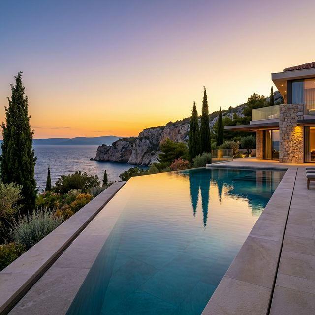
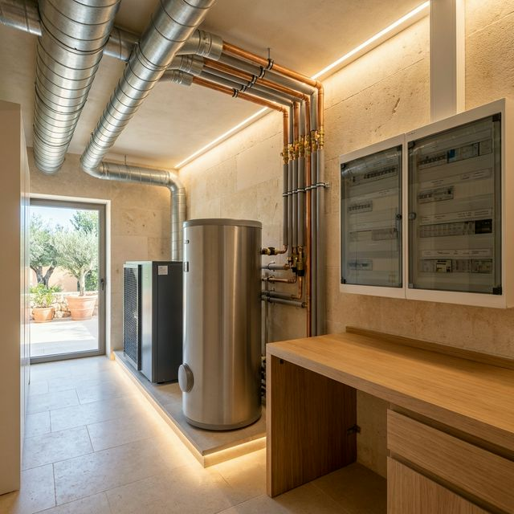
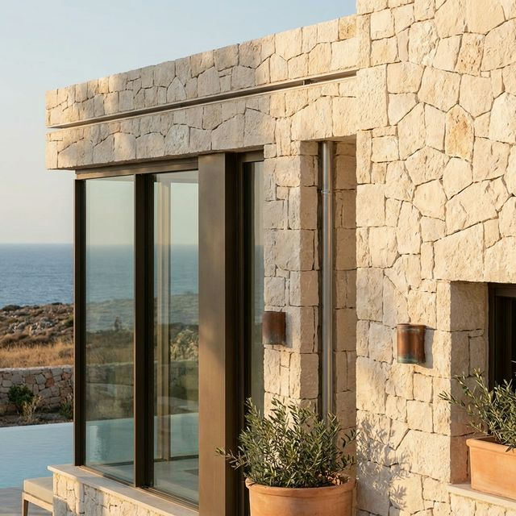
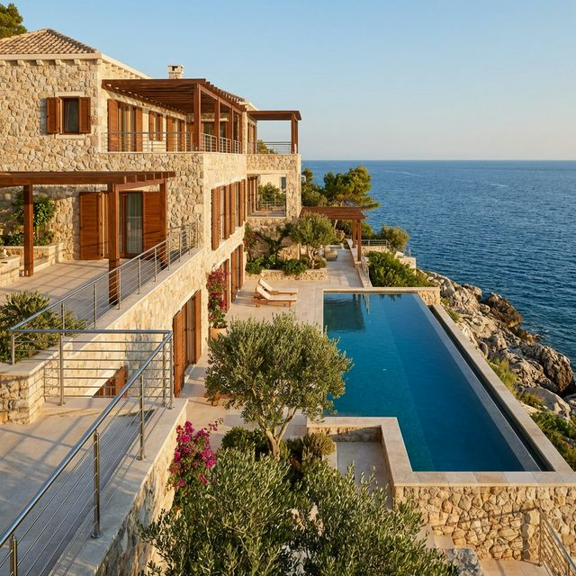
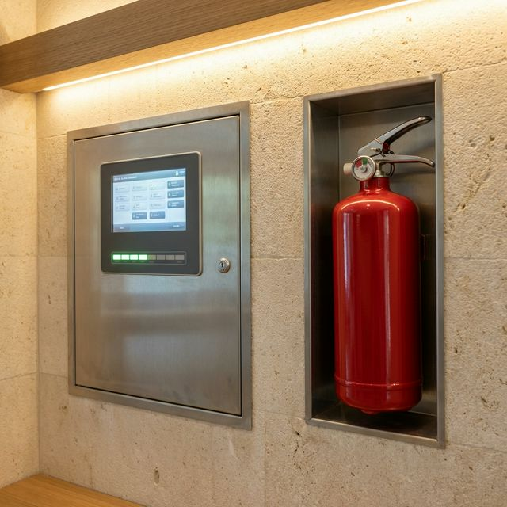
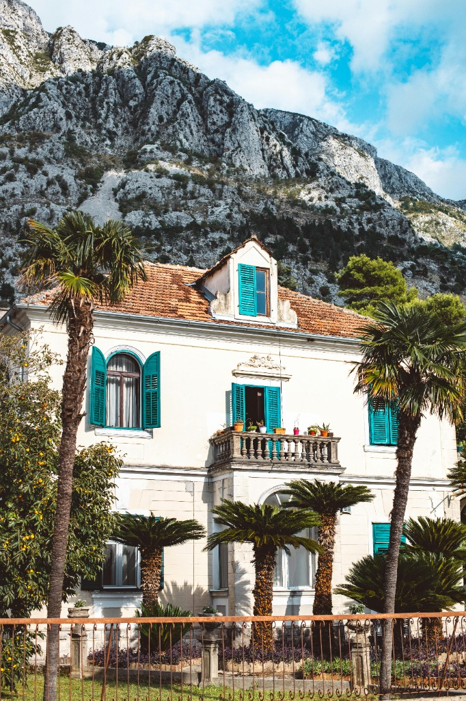

Villa Care
Collective
Pružamo tehničko održavanje vila i bazena u Dubrovniku i okolici. Brinemo se za sustave koji su od ključne važnosti: bazensku tehniku, kvalitetu vode, klimatizaciju (HVAC) te sve vanjske i unutarnje elemente objekta.
Provodimo sustavne preglede i jasno izvješćujemo o stanju—kako bi vaš dom ostao zaštićen, učinkovit i uvijek spreman. Naš iskusni tim ima desetljeća iskustva u osiguravanju dosljedno visokih standarda za zahtjevne vlasnike nekretnina.
Utemeljena na pažnji prema detaljima i visokim standardima.
Naše Usluge
Reagiramo brzo, izoliramo rizik i koordiniramo stručnjake uz kontrolu kvalitete od početka do kraja. Naša sveobuhvatna usluga pokriva svaki aspekt tehničkog održavanja vile.

1) Sustavi bazena
- Testiranje i balansiranje kemije vode
- Servisiranje filtracije/cirkulacije (filteri, pumpe, ventili, protok/tlak)
- Servisiranje opreme (grijači/dizalice topline, sustavi kloriranja/doziranja, upravljanje)
- Istraga curenja i dijagnostika performansi
- Sezonsko otvaranje i zimsko zatvaranje

2) Ključni sustavi
- HVAC servisiranje i podešavanje performansi (filteri, odvodi, protok zraka, kalibracija)
- Pregled vodoinstalacija i prevencija curenja (mokri prostori, ventili, tlak)
- Održavanje sustava tople vode (bojleri/dizalice topline/spremnici, čišćenje kamenca po potrebi)
- Dijagnostika električnih kvarova + koordinacija certificiranih radova

3) Zaštita pročelja i krova
- Inspekcija i prevencija prodora vode s krova/terase
- Provjera i čišćenje žljebova, odvoda i oborinskih voda
- Održavanje okovja vrata/prozora, brtvi i komponenti osjetljivih na koroziju
- Praćenje stanja fasade/kamena i koordinacija specijalista

4) Obalna zaštita
- Kontrola korozije od soli i preporuke za materijale otporne na morske uvjete
- Praćenje vlažnosti i prevencija plijesni (strategija ventilacije/odvlaživanja)

5) Sigurnost i spremnost
- Provjere protupožarnih uređaja (i koordinacija certificiranih pružatelja usluga)
- Testiranje zatvaranja/izolacije vode i hitna stabilizacija
- Brzi odziv s dokumentiranim radnjama

6) Upravljanje
- Planirani program preventivnog održavanja (tjedno/mjesečno/sezonsko)
- Strukturirani tehnički pregledi s foto zapisnicima i mjernim bilješkama
- Trijažiranje problema (hitno / uskoro / praćenje) s proračunskim smjernicama
- Upravljanje dobavljačima, nadzor, kontrola nedostataka i kvalitete
- Registar imovine + dnevnik održavanja + mjesečno/kvartalno izvješćivanje
Naš pristup upravljanju
Održavanje ovakvih nekretnina zahtijeva strpljenje i temeljitu, detaljnu analizu. Nećemo žuriti niti kompromitirati naše standarde. Naš tim osobno se posvećuje svakoj nekretnini kojom upravljamo, kako bi vlasnici bili sigurni da dijelimo isti interes u očuvanju vrijednosti i funkcionalnosti njihove imovine.